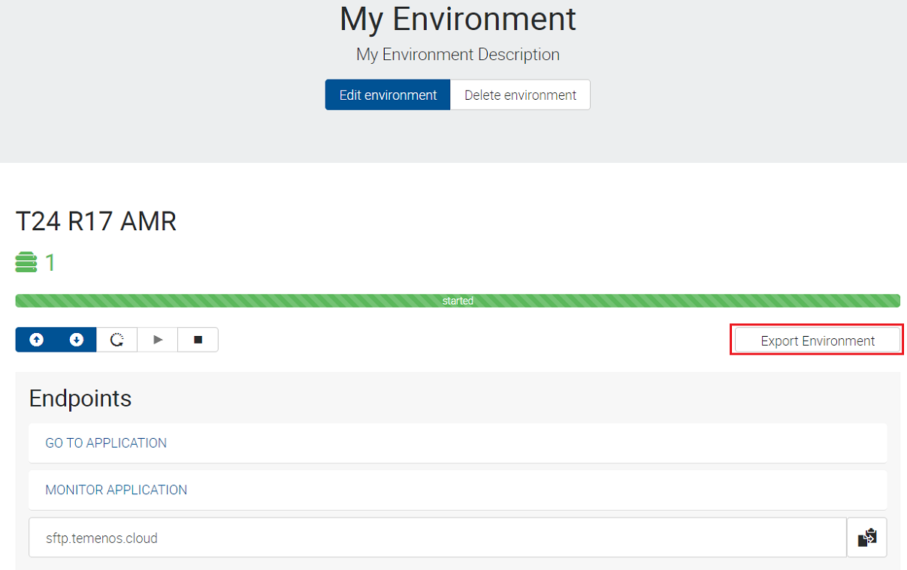
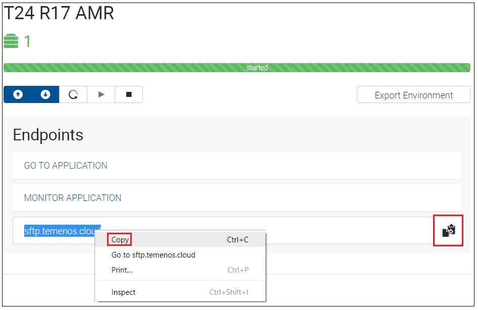
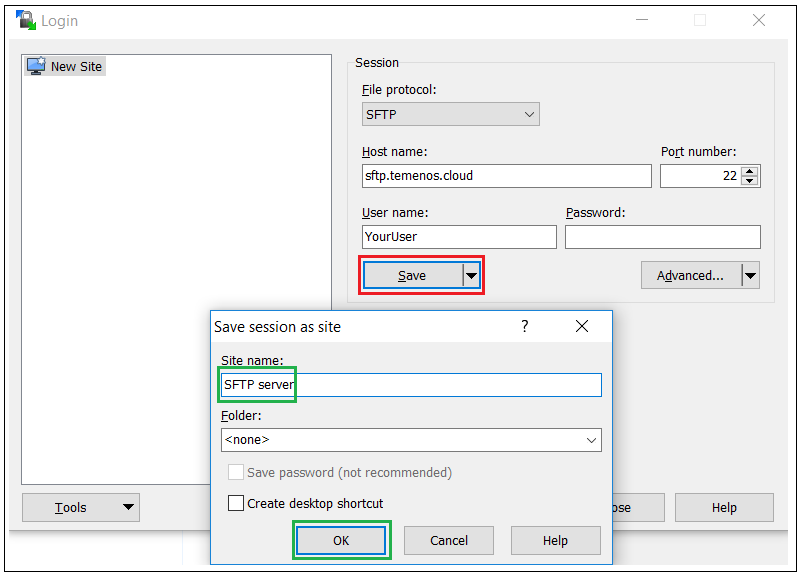
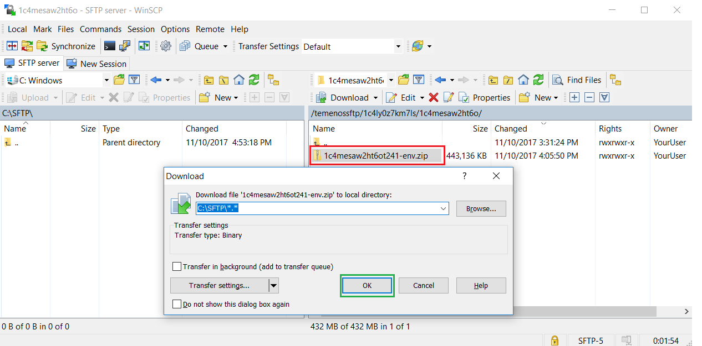
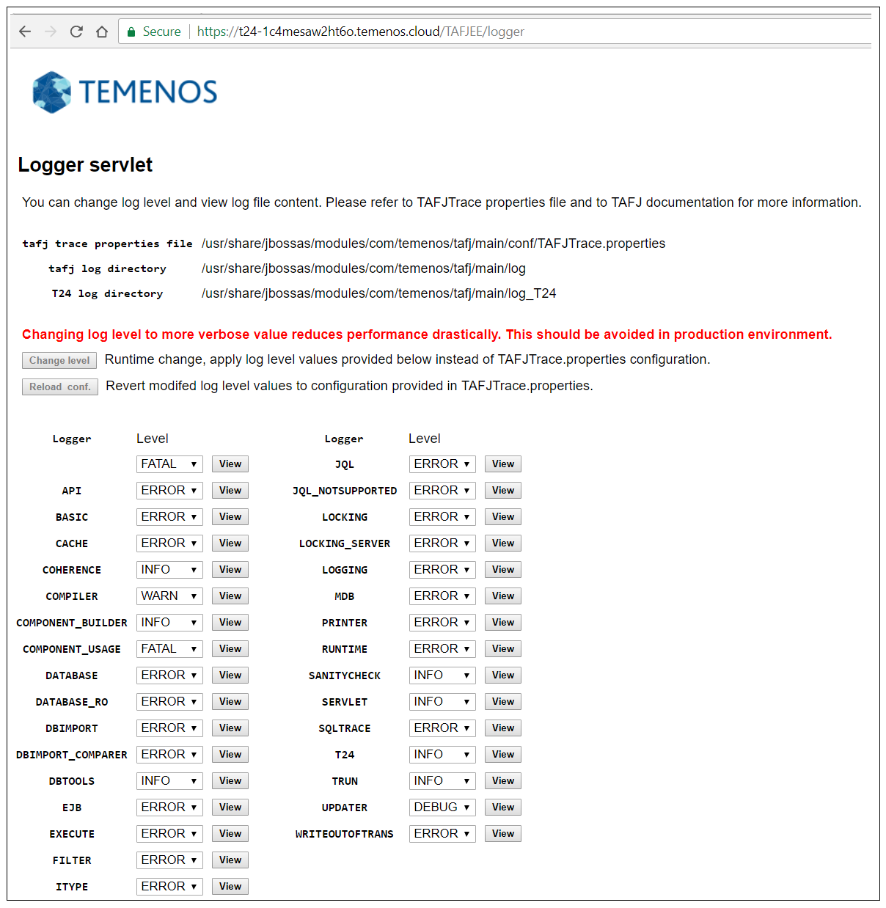
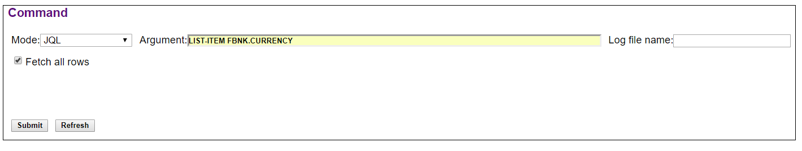

Introduction
This user guide shows different ways of accessing details related to your sandbox when deploying the following:
- Design Studio Packages
- Plugins
- Updates
- WAR files
1. Export Environment Details
The Export Environment Details functionality gives you access to different information related to your sandbox like:
-> the T24 UD (default) folder from your T24 sandbox
-> the jars deployed in your T24 sandbox
-> the war files deployed(with success or not) in your T24 sandbox
-> the jboss server.log from your T24 sandbox.
The environment details are exported in a SFTP server to which you have to connect in order to download the related files in your local machine. For this purpose, make sure you download and install WinSCP SFTP client.
The Export Environment Details functionality can be triggered from PaaS Portal following the bellow steps:
- Log-in to your organisation in PaaS Portal, go to your enviroment page and click on the Export Environment button for the T24 application.
 - After click, the Export Environment button will become disabled(as per bellow picture), meaning that the export was triggered.

Note
The Export Environment action is finished when the Export Environment button becomes enabled.
In order to download the exported files of your environment from the SFTP server to your local machine:
- In PaaS Portal for your organisation, go to your environment page and Right click and copy the sftp.temenos.cloud Endpoint or click the copy to clipboard icon from the right:

- Open WinSCP SFTP client and create a new site that will allow you to connect to the SFTP server. Make sure you put sftp.temenos.cloud Endpoint as Host name, your PaaS user as User name and instead of password, the SSH key related to your PaaS user must be used.

- In order to attach the SSH key, press Advanced button, go to Authentification menu and select the private key related to your PaaS user.

- After attaching your SSH key, save your site with any name for future use. 
- Click Login to connect to the SFTP server.
If connection is successful, you will have 2 sections in WinSCP:
-> the left section(highlighted in black) represents the location from your local machine where the environment details will be downloaded.
-> the right section(highlighted in yellow) represents the location of the exported environment details in the SFTP server; the environment details are saved in the SFTP server in /organisationID/environmentID folder structure.
- Go inside your environmentID folder and you will see a zip file that contains the Environment Details. In order to download the zip, select it and press F5.
 - After downloading the zip file to your local machine, unzip it and you will have the bellow folder structure:

Based on the above folder structure, you can check the following:
-> If you deployed any update in your sandbox, check if jar/jars related to the update are changed in the jar list from modules/com/temenos/t24/main folder.
-> If you deployed any package in your sandbox, check if the jar related to the package is present in modules/com/temenos/t24/main/localjars folder.
-> If you deployed any war file in your sandbox, check if the war was deployed with success(a file named war_name.deployed should be present in standalone\deployments folder). The war deployment will be failed if a file named war_name.failed is present in standalone\deployments folder and this file must be checked for details.
2. TAFJEE Monitoring Tool
TAFJEE Monitoring Tool can be used in the following situations:
-> To get the TAFJ installation details from your Sandbox (using tDiag Servlet)
-> To get the compilation details for a T24 routine from your Sandbox (using tShow Servlet)
-> To access various logs from your Sandbox like Database log or Runtime log (using Logger Servlet)
-> To access como content from your Sandbox (using Como Servlet)
-> To execute DBTools commands (using DBTools Servlet).
To access the TAFJE Monitoring Tool for your Sandbox, log-in to your organisation in PaaS Portal, go to your enviroment page and click on the MONITOR APPLICATION Endpoint for the T24 application.
The bellow page is opened from which various servlets can be accessed.
TAFJ Environment Information
- To view various information about the TAFJ Environment from your Sandbox, access the TAFJ Monitoring Tool of your Sandbox from PaaS Portal and select tDiag option from the Diagnostic section.

- The next page is opened in which information like TAFJ installation details, Environment details, TAFJ Runtime properties, T24 Monitoring properties and TAFJ Session Monitor properties can be found.

T24 Routine Information
- To view the compilation details for a T24 Routine from your Sandbox, access the TAFJ Monitoring Tool of your Sandbox from PaaS Portal and select tShow option from the Diagnostic section.

- The next page is opened in which you must enter the name of the T24 Routine. Click Submit to get the compilation details.

- The details like compilation date or the .jar file that contains the class of the T24 Routine are displayed.

Logs Information
- To view different log files from your Sandbox(Database log/Runtime log), go to the TAFJ Monitoring Tool of your Sandbox from PaaS Portal and select Log files option from the Troubleshooting section.

- The next page is opened in which you can select any log from the list and change dynamically the log level (6 log levels are available: FATAL, ERROR, WARN, INFO, DEBUG, TRACE).
 - For example, to view the Database log for a specific level, go to the Database log part of the page, choose the appropriate level and click View.

- The Database log information for the selected level is displayed.

Note
To change the log level for a specific logger, select from the Level Filter combo box the appropriate level and the page will be refreshed automatically based on the selected level.
Como Information
- The TAFJ Monitoring Tool offers the possibility of viewing the log files generated when running different tSAs(Temenos Service Agents) or when installing T24 packages or T24 updates in your Sandbox. This is achieved with the aid of the Como servlet which provides direct access to the &COMO& folder content from your Sandbox.
To view the Como content, go to the TAFJ Monitoring Tool of your Sandbox from PaaS Portal and select Como files option from the Troubleshooting section.
- The next page is opened in which you can select for which Como log do you want to View the details.

- In the bellow example, the Como log generated for installing a T24 package is displayed.

Note
Please note that you will get a picture of the &COMO& folder from your Sandbox at a point of time only and that there is no automatic refresh functionality. Thus, you must use the Refresh button to get latest state of Como logs.
DBTools Information
- To interogate the Sandbox Database from TAFJEE tool with DBTools commands, go to the TAFJ Monitoring Tool of your Sandbox from PaaS Portal and select DBTools option from the Execution section.

- A pop-up will appear in which JBOSS credentials must be introduce because the DBTools application can be accessed by authenticated users only.

Note
In case you do not have the required JBOSS/DBTools credentials, please contact MarketPlace team at
marketplace-support@temenos.com.
- The next wizard will appear in which you can execute any DBTools command by following the next steps:
-> Enter the DBTools user credentials in the Authentication section.
-> In the Command section, select the command type from the Mode combo box, enter the command in the Argument field and optionally you can enter a name in the Log file name field.
-> Click the Submit button to execute the command and a message will be displayed in the page.
-> Depending on the command, an output will be generated and it will be available in the output list after pressing the Refresh button.
- For example, a JQL command is entered.
 - After clicking the Submit button, a message is displayed.

- Click the Refresh button and in the Output section, a log(containing the result of the DBTools command) will be displayed.

- Click the View button related to the generated log to view the result of the DBTools command.